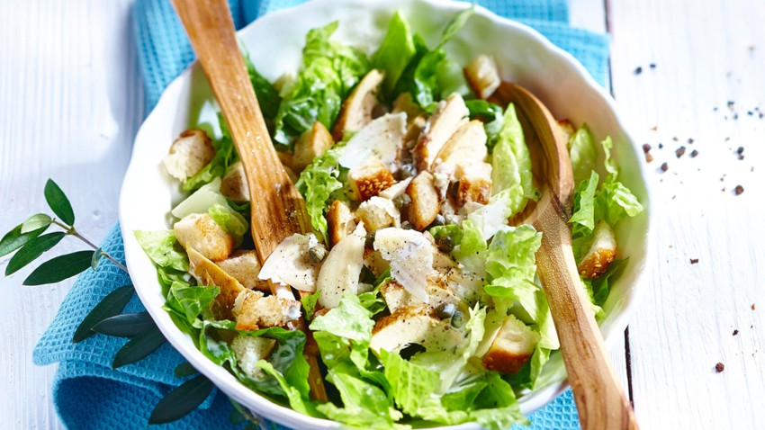

Cesar Salad

Ingredient
THE DRESSING
- 6 anchovy fillets packed in oil, drained
- 1 small garlic clove
- Kosher salt
- 2 large egg yolks
- 2 tablespoons fresh lemon juice, plus more
- ¾ teaspoon Dijon mustard
- 2 tablespoons olive oil
- ½ cup vegetable oil
- 3 tablespoons finely grated Parmesan
- Freshly ground black pepper
THE CROUTONS
- 3 cups torn 1" pieces country bread, with crusts
- 3 tablespoons olive oil
THE LETTUCE
- 3 romaine hearts, leaves separated
THE CHEESE
- Parmesan, for serving
Preparation steps
THE DRESSING
- Chop together anchovy fillets, garlic, and pinch of salt. Use the side of a knife blade to mash into a paste, then scrape into a medium bowl. Whisk in egg yolks, 2 Tbsp. lemon juice, and mustard. Adding drop by drop to start, gradually whisk in olive oil, then vegetable oil; whisk until dressing is thick and glossy. Whisk in Parmesan. Season with salt, pepper, and more lemon juice, if desired.
- DO AHEAD: Can be made 1 day ahead.
THE CROUTONS
- Make your own. Tearing, not cutting the bread ensures nooks and crannies that catch the dressing and add texture. Preheat oven to 375°. Toss bread with olive oil on a baking sheet; season with salt and pepper. Bake, tossing occasionally, until golden, 10–15 minutes.
THE LETTUCE
- Use whole leaves; they provide the ideal mix of crispness, surface area, and structure.
THE CHEESE
- Caesars crowned with a mound of grated Parmesan may look impressive, but all that clumpy cheese mutes the dressing. Instead, use a vegetable peeler to thinly shave a modest amount on top for little salty bursts.
THE ASSEMBLY
- Skip the tongs. Use your hands to gently toss the lettuce, croutons, and dressing, then top off with the shaved Parm.